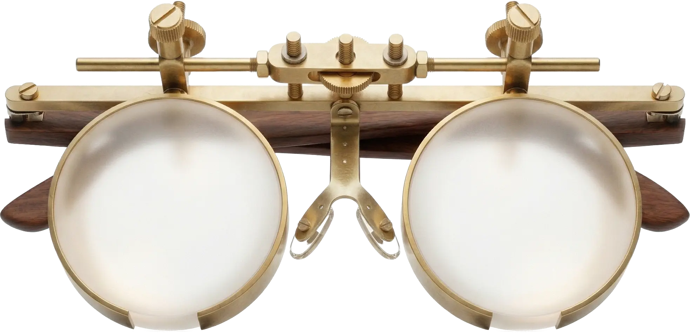
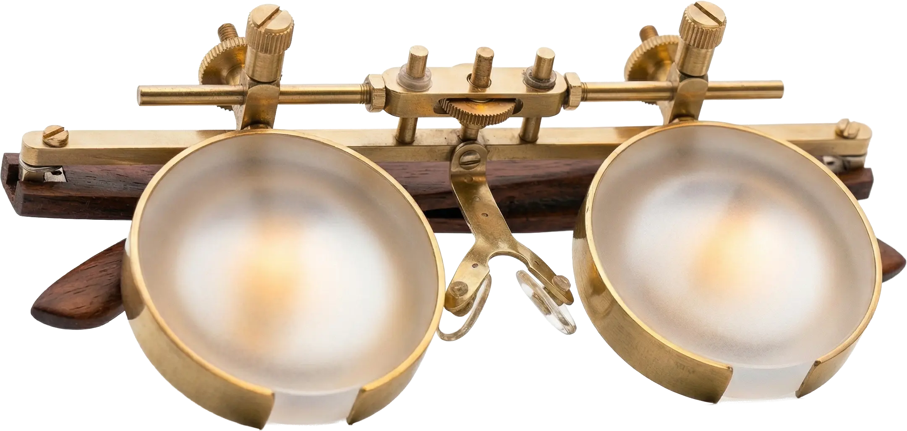

Латунь
Литая латунь. Ручная финишная обработка. Со временем темнеет, появляется патина — это характер, не дефект.
Инструмент для перезагрузки мозга

ОкО — персональный оптический инструмент без линз. Два вогнутых зеркала с серебряным напылением образуют замкнутую оптическую систему с вашим собственным зрачком. Вы видите непрерывную пульсацию радужки и зрачка — явление, которое изобретатель назвал микродинамикой. Это живое стереокино, уникальное в каждый момент.

Через зрение проходит 80% всей информации. В повседневной жизни мы либо смотрим вдаль, расслабляя внутренние мышцы, но нагружая внешние, — либо работаем вблизи, расслабляя внешние, но напрягая внутренние. Ни в одном обычном состоянии оба типа глазных мышц не отдыхают одновременно.
Даже в тишине перегруженная зрительная кора продолжает работать. Темнота закрытых глаз воспринимается нервной системой как сенсорная депривация, а не отдых. Мозгу нужна живая, но мягкая картина — физиологическая пауза, где фокус можно отпустить, а мышцы расслабить одновременно.
Вогнутое зеркало ОкО и выпуклое тёмное зеркало вашего зрачка образуют единую оптическую систему. Каждое микродвижение зрачка мгновенно отражается и увеличивается.
Вы видите то, что никогда не было видимым: непрерывную пульсацию радужки и зрачка. Два зеркала создают стереоскопическое, объёмное изображение — живое стереокино.
Обе группы глазных мышц расслабляются одновременно. Локус церулеус успокаивается. Зрительная кора переключается в режим мягкого покоя.
Это не гипноз и не медитация. Это физика: замкнутая оптическая система, в которой ваш глаз впервые видит сам себя в движении.
Вы видите пульсирующую вселенную собственной радужки — в объёме, в реальном времени. Каждый кадр уникален и неповторим.
Единственное состояние, в котором внешние и внутренние мышцы глаза расслабляются одновременно — невозможно ни при взгляде вдаль, ни при работе вблизи.
Парасимпатическая нервная система активируется автоматически. Уровень кортизола снижается. Локус церулеус переходит в режим покоя.
Не нужно учиться медитировать. Оптическая система создаёт медитативное состояние через физику — с открытыми глазами.
Вы учитесь замечать внутренние состояния организма. Исследования связывают улучшение интероцепции со снижением тревожности и депрессии.
Механический инструмент без электроники. Будет работать так же через двадцать лет. Патина латуни — это характер, не дефект.
Умещается в ладонь. Лежит в деревянном футляре на полке — всегда под рукой.
Когда вы впервые смотрите в ОкО, первое, что замечаете — ваша собственная радужка, увеличенная и объёмная. Вы видите структуры, которых никогда не видели: трабекулы, крипты, пульсирующий край зрачка.
Через несколько минут вы замечаете главное: зрачок живёт. Он расширяется и суживается с частотой 0,5–2 Гц — это не зависит от вашей воли. Вы наблюдаете работу собственного мозга в реальном времени.
Это не просто впечатление. Это физиологический процесс: одновременное расслабление обеих групп глазных мышц, парасимпатическая активация. Многие описывают это как глубокую тишину, появившуюся без усилий.
Возьмите ОкО. Поднесите к глазам, как бинокль — каждое зеркало напротив своего глаза.
Смотрите в зеркала. Вы увидите увеличенное отражение собственной радужки и зрачка в объёме — живое стереокино.
Наблюдайте 5–15 минут. Микродинамика зрачка покажет состояние вашего мозга. Расслабление придёт само.
Литая латунь. Ручная финишная обработка. Со временем темнеет, появляется патина — это характер, не дефект.
Лазерная резка, ручная шлифовка. Тёплый, органичный материал в руке.
Многослойное серебряное или золотое вакуумное напыление. Радиус кривизны откалиброван для наблюдения микродинамики. Без линз — только зеркала.
Ручная работа. Латунь, вогнутые зеркала, ореховое дерево.
Изготовление: 4–6 недель
Задать вопрос →Я работаю по двенадцать часов за экраном. После ОкО — первый раз увидел, как мой зрачок пульсирует. Десять минут — и внутренний шум стихает. Как будто мозг наконец замолчал.
Я не умею медитировать — мне сложно закрыть глаза и ни о чём не думать. А тут смотришь в зеркала и видишь живую вселенную внутри собственного глаза. Тишина приходит сама.
Скептик по натуре. Думал — красивая безделушка. Но латунь тёплая в руках, зеркала идеальные, и когда видишь свою радужку в объёме, пульсирующую — понимаешь, что это совсем не то, что ожидал.
Живые отзывы — без сценария, без монтажа.
Внутри вашего зрачка — бесконечность.
Вы смотрите на себя. И впервые — себя видите.
Живое стереокино собственных глаз. Уникальное в каждый момент.